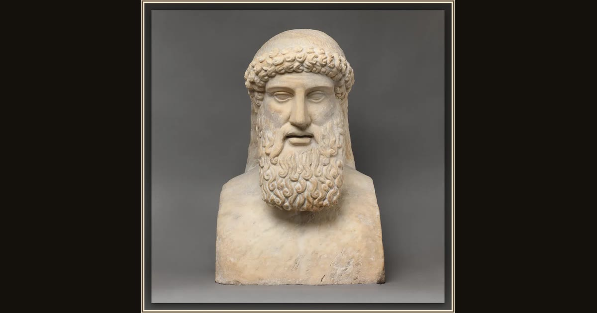

Marble herm
Roman · 1st or 2nd century CE · met
A Roman marble herm: a bearded head set on a squared shaft, the form of the stone Hermae whose faces were mutilated across Athens in a single night (6.27.1). Explore its place in Thucydides's History of the Peloponnesian War, Book VI, chapter 99.